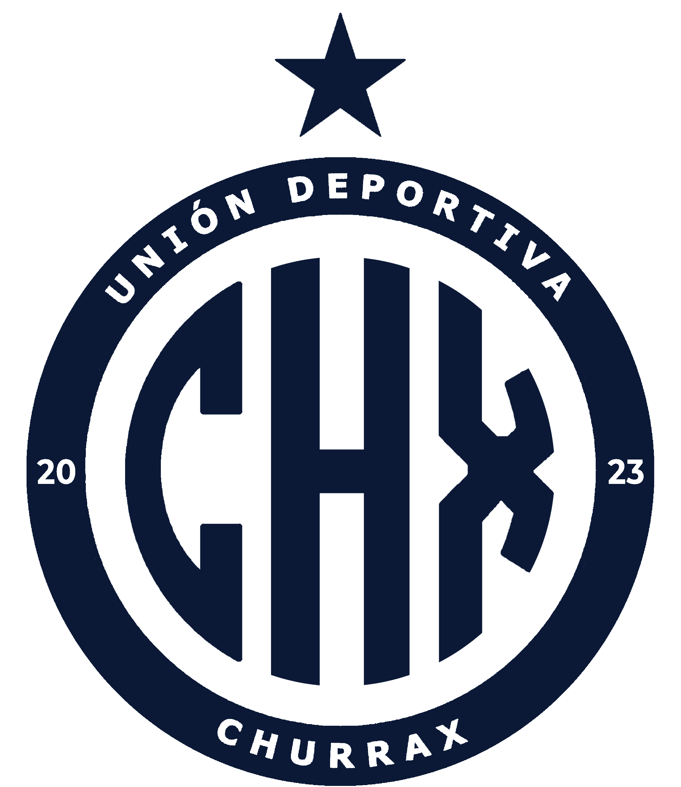

EN CURSO2026/27
La temporada actual
Plantilla, jornadas, resultados y noticias se irán completando a medida que el club confirme la información.

UD CHURRAXMEMORIA · TEMPORADAS · LEGADO
Un archivo vivo para volver a consultar qué pasó, quién estuvo y cómo se jugó.
Cada temporada conserva sus propios registros. Los años cerrados se consultan como fueron: no se sobrescriben con los datos del curso actual.
Plantilla, jornadas, resultados y noticias se irán completando a medida que el club confirme la información.
El archivo fotográfico y de vídeo conserva jugadas de la temporada. Aún faltan datos oficiales de clasificación y resultados para completar su ficha.
El archivo registra la primera victoria oficial, ante Racing de Sevilla (4–2, 28/10/2023); el triunfo ante Fénix FC (4–1, 02/12/2023), y la victoria en el derbi ante Deportivo Hispalense (4–2, 16/12/2023).
El archivo se amplía al cerrar cada temporada. Las fichas anteriores permanecen accesibles.
Plantillas, estadísticas, partidos, resultados y noticias se guardan bajo su temporada correspondiente para que el club pueda volver a ellos.